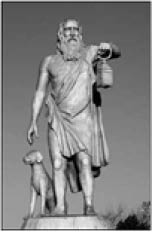
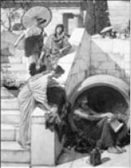
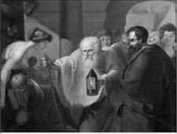

Diogenes
Diogenes (Diyojen, MÖ 412-323)
“Neden iki kulağımıza karşılık bir dilimiz var biliyor musunuz? Çok dinleyelim, az konuşalım diye.”
MÖ 412 Sinop doğumludur. Ailesiyle Atina’ya göç eden Diogenes, burada umduğu gibi bir yaşama kavuşamamıştır. Sokrates’in öğrencisi olan Antisthenes onun hayatında oldukça etkili olur. Doğaya uygun yaşamayı, ihtiyaçları azaltmayı ilke edinmiş, Yunanca köpek anlamına gelen Kinik öğretisine uygun yaşamaya başlamıştır. Mutluluğa, bütün tutkularından sıyrılarak, her türlü bağdan kurtulmuş içsel özgürlükle kavuşulabileceğini savunan Kinikler, böylece insanda ölçüsüzlük, gösteriş ve kendini beğenmişlik olmayacağını söylüyorlardı.
Bir fıçı içinde yaşayan, tek mal varlığı su içtiği çanak olan Diogenes, bir gün çeşmeden avucuyla su içen bir çocuk görünce çanağından vazgeçerek onu da atmıştır.
Ünlü filozof, herkesin aynı yoksullukta yaşamasını değil, en düşük koşullarda bile bağımsız ve mutlu olunabileceğini savunmuştur.
Ünlü filozof Diogenes, dar bir sokaktan geçerken zengin olduğu her hâlinden belli olan biri ile karşılaşır. Sokaktan geçebilmeleri için ikisinden birinin kenara çekilip yol vermesi gerekirken zengin olduğu kadar kibirli de görünen adam “Ben bir serserinin önünden çekilmem” der.
Diogenes bu sözlere umursamaz bir tavırla şöyle cevap verir: “Fakat ben çekilirim”.
Eşkıyanın biri, fakirliğinden dolayı, Diogenes’e hakaret eder. Bu olaya aldırmayan Diogenes, sadece şunları söyler eşkıyaya:
“Hiç görmedim hayatımda senden başka Fakir olduğum için hakaret eden; Ama tanık oldum pek çok insan Bir bir asıldılar hırsızlıktan.”
Diogenes bir gün, tüm mal varlığını israf ederek bitirmek üzere olan bir adamdan on para ister. Bu istek üzerine adam “Neden başkalarında bir para istiyorsun da benden on para istiyorsun?” diye sorar.
Adama israfa devam ettiği takdirde gelecekte ne ile karşılaşacağını göstermek isteyen ünlü filozof şöyle cevap verir: “Çünkü diğerlerinden daha sonra istesem yine alabilirim. Fakat senin bu israfın yüzünden bana bir daha para verebileceğinden şüpheliyim.”
“Yemek yemek için en uygun zaman ne zamandır?” diye ünlü filozofa sorduklarında ise Diogenes, “Zenginsen istediğin zaman, fakirsen fırsat bulduğun zaman...” der.
Çorba yapmak için çeşme başında mercimek ayıklayan Diogenes’in yanına İmparator’a yakınlığı ile bilinen başka bir filozof Aristippus gelir. Bilgili fakat bilgisini dalkavukluktan yana kullanan Aristippus, Diogenes’e alaycı bir sesle “Sen de aklını kullanıp İmparator’a yakın olmayı becerebilseydin, böyle çeşme başlarında mercimek ayıklamak zorunda kalmazdın” der.
Diogenes başını yaptığı işten kaldırmadan şu cevabı verir:
“Sen de böyle mercimek çorbasına kanaat edebilsey-din, İmparator’a dalkavukluk etmek zorunda kalmazdın!”

Diogenes,Ressam John William Waterhouse, 1882
Filozof Diogenes’in ününü duyan İmparator İskender tanışmak için onu sarayına çağırır. İmparator salona girdiğinde herkes ayağa kalkarken o yerinde oturmayı tercih eder. İskender kızgın bir şekilde, “Bu ne cüret! Sen benim kim olduğumu bilmiyor musun, benden hiç korkmuyor musun yoksa?” diye sorar.
Diogenes İmparator’un bu sorusuna sakince başka bir soruyla karşılık verir:
“Sen iyi birisi misin, yoksa kötü biri mi?”
“Elbette iyi biriyim, bunu herkes bilir.”
“Peki, iyi adamlardan korkmalı mıyız ki ben sizden korkayım?”
Bu cevap sonrasında İmparator, Diogenes ile sık sık görüşmeye başlar, hatta bazen de kendisi bu büyük fıçıda yaşayan filozofu ziyarete gider.
Bir gün bu ziyaretlerin birinde güneşlenmekte olan Diogenes, İmparator İskender ve adamlarının geldiğini görür. Güneşlenmeye devam eden ünlü filozofun zor koşullarda yaşadığını gören İskender “Dile benden ne dilersen!” der.
Diogenes, ihtiyacının bulunmadığını söyleyecekken o anda aldığı en büyük zevki engelleyen İmparator’a, tarihe geçen şu cevabı verir:
“Gölge etme başka ihsan istemem!”
Üst üste yığılmış insan kemikleri arasında dolaşan Diogenes’i gören İmparator Büyük İskender ona ne yaptığını sorar. Ünlü filozof ölümün köle ile kralı eşit kıldığını anlatan şu güzel cevabı verir:
“Babanızın kemiklerini arıyorum. Ama hangisinin kölelere, hangisinin babanıza ait olduğunu kestiremiyorum.”
Güpegündüz eline fener alarak Atina sokaklarında dolaşan filozofa ne yaptığı sorulduğunda, elindeki feneri insanların yüzüne tutarak “Adam arıyorum. Adam... “ diye cevap verir.

Diogenes sokaklarda doğru insanı ararken, Ressam Johann Wilhelm Tischbein Heinrich, 18. yüzyıl
Diogenes’e “Gülmek ve ağlamak nedir sence?” diye sorduklarında ise filozof şöyle bir cevap verir: “İkisinin arasında yalnızca bir burun farkı vardır. Kimi ağlanacağı zaman güler, kimi de gülüneceği zaman ağlar.”
Yakışıklı, hâli vakti yerinde olan fakat konuşmasını bilmeyen ve her konuştuğunda çevresini kıran bir genç hakkında düşüncesini soranlara ünlü filozof şöyle cevap verir: “Muhteşem bir ev. Fakat içinde kimse yok!”
Atina sokaklarında dolaşırken, hamalın biri taşıdığı keresteyi ünlü filozofun kafasına çarptıktan sonra “Dik-kaaat!” diye bağırır. Kendine geldiğinde ise hamal çoktan uzaklaşmıştır. Ertesi gün elinde sopayla dolaşırken yolda dünkü hamalla karşılaşır. Sopayı var gücüyle hamalın kafasına indirip “Dikkaaat! Dikkaaat!” diye bağırarak yoluna devam eder.
Filozof Diogenes’e çevresindekiler “İhtiyarladınız. Artık bundan sonra dinlenmeniz gerek” der.
Diogenes, “Niçin?” diye sorar, “Eğer koşucu olsaydım, koşunun sonuna doğru yavaşlamam mı gerekirdi? Yoksa tam tersine, bütün gücümle koşmak zorunda mı kalırdım?”
Filozof Diogenes kırda gezerken genç ve acemilerin ok atma eğitimi yaptıklarını görür. Telaşlanan filozof hemen koşarak hedef tahtasının önünde durur. Oradan çekilmesini söyleyen gençler onu ikna edemeyince nedenini sorarlar.
Diogenes ise şu cevabı verir: “Çevrede bundan daha emin bir yer bulamadım da!”